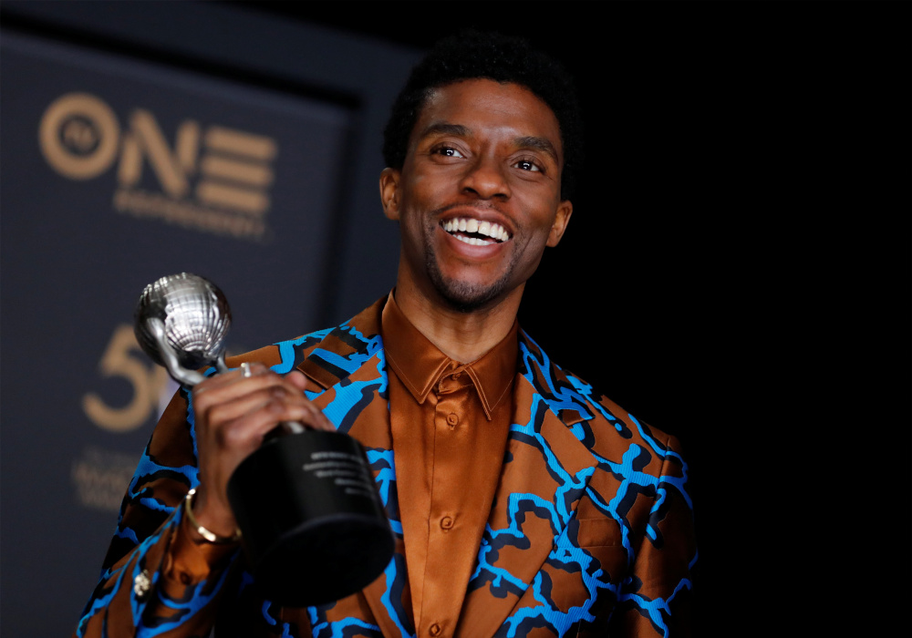

Chadwick Boseman tipped for posthumous glory with 'Ma Rainey' swansong.
Timeline of Chadwick Boseman
- Advocacy
Boseman supported various charities. He worked with cancer charities including St. Jude's Hospital, continuing to support those battling the disease up until his own death from it; in a message to a producer days before he died, Boseman inquired about sending gifts to childhood cancer patients.He donated $10,000 to the Boys and Girls Club of Harlem to provide free tickets for children who wanted to see Black Panther. Boseman advocated for children's charities, with the Jackie Robinson Foundation noting after his death that he helped with their youth outreach. When Disney planned to donate $400 million to charitable causes, Boseman encouraged the move. In April 2020, he donated $4.2 million in personal protective equipment to hospitals fighting the COVID-19 pandemic in black communities, starting his own Operation 42 challenge to encourage others to donate PPE.
Back